00 设计方向 · 蓝白出行工具
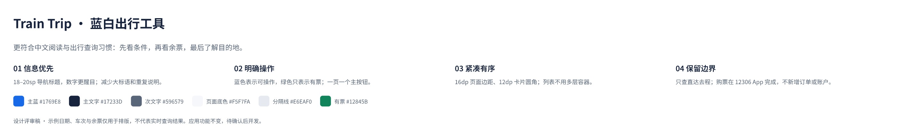
01 出行条件 · 蓝白新版
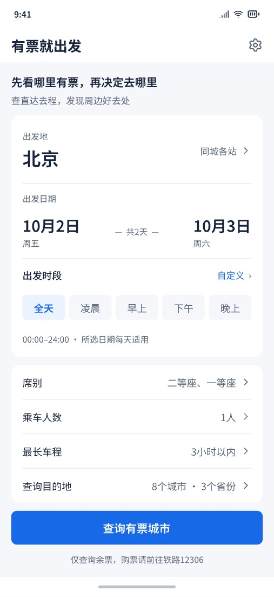
02 有票城市 · 按省分组
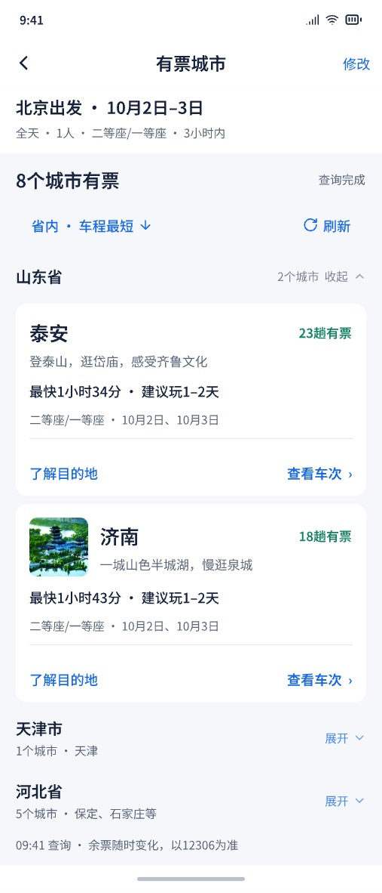
03 目的地介绍 · 景点
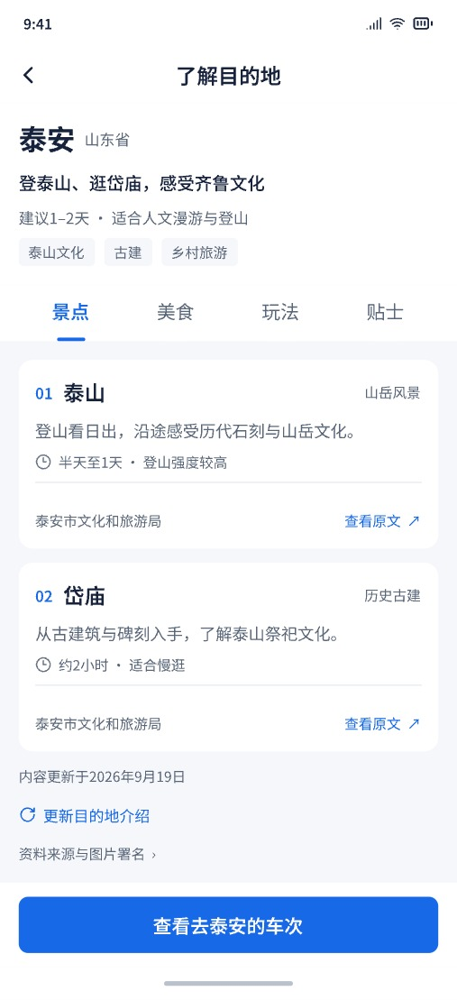
04 车次列表 · 整卡标记
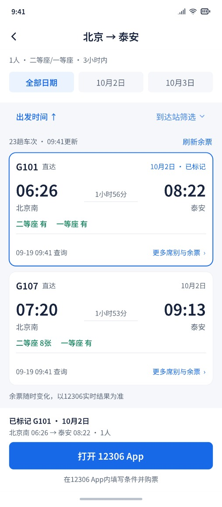
05 设置 · 服务状态
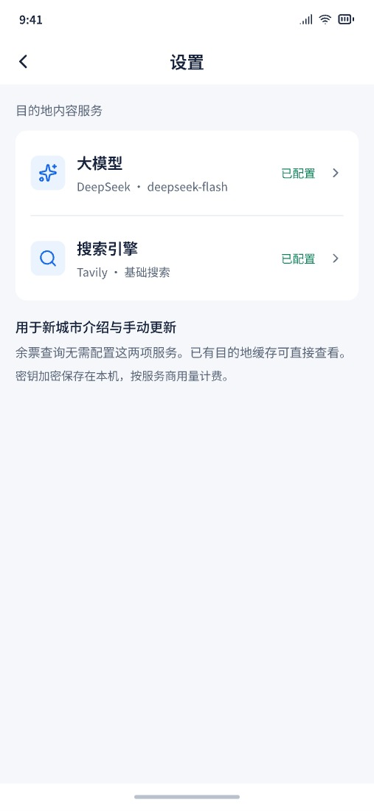
06 大模型设置 · 已配置
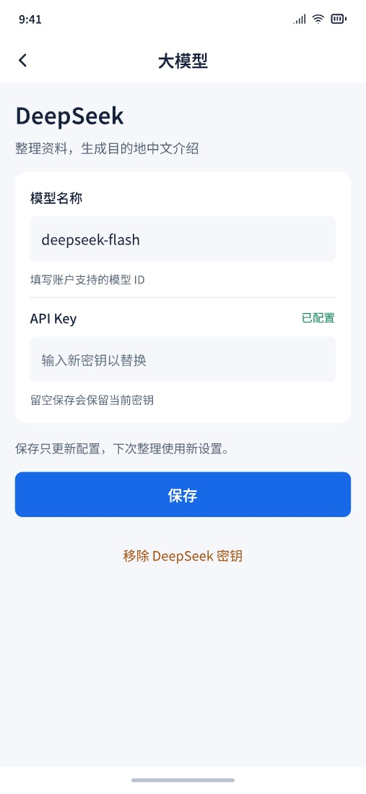
07 搜索引擎设置
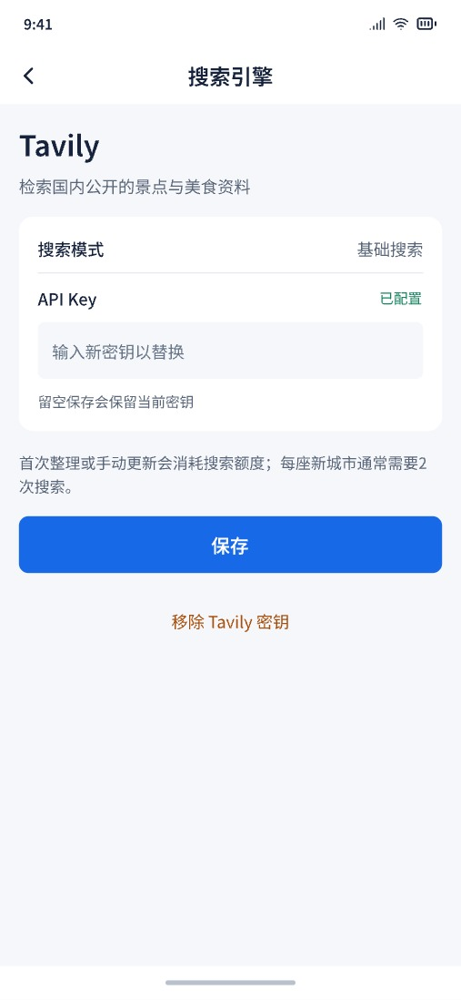
08 目的地介绍 · 美食
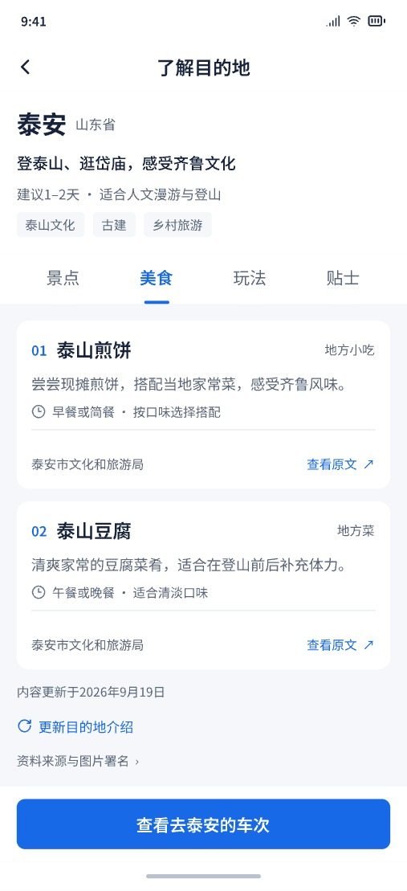
09 目的地介绍 · 玩法
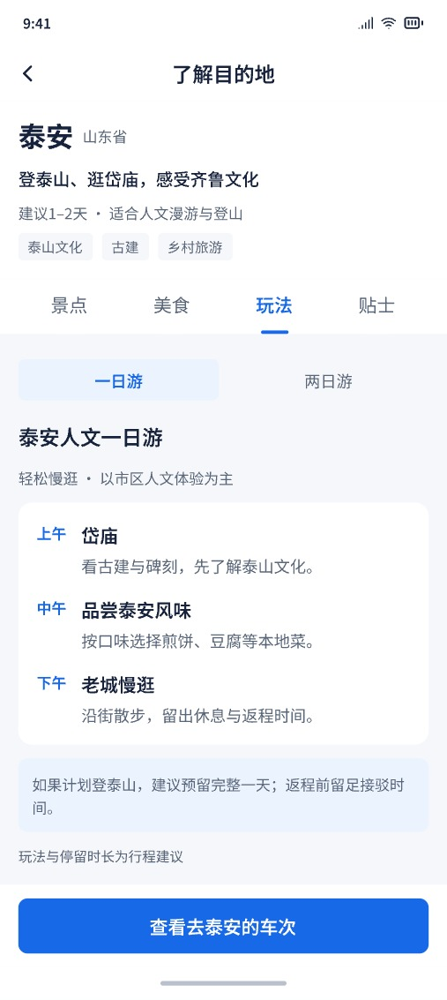
10 目的地介绍 · 贴士
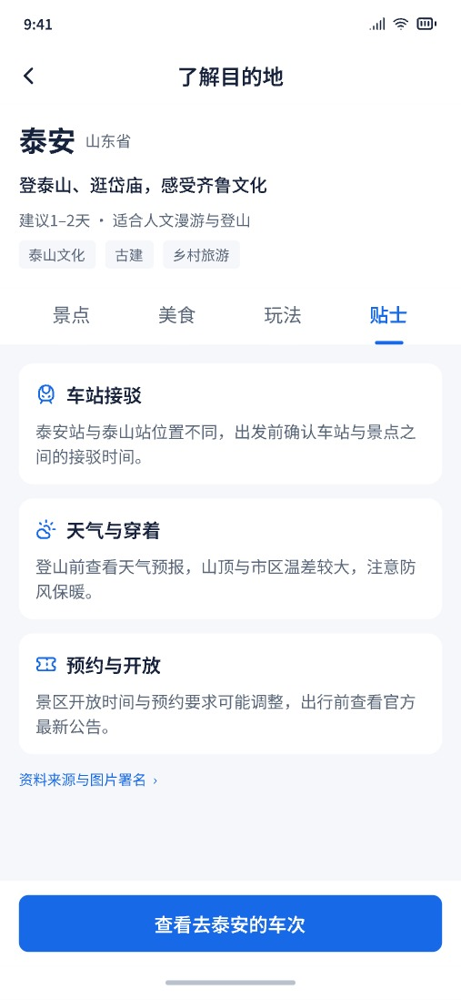
11 日期选择 · 全屏面板
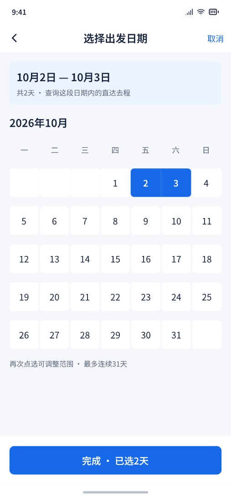
12 席别选择 · 全屏面板
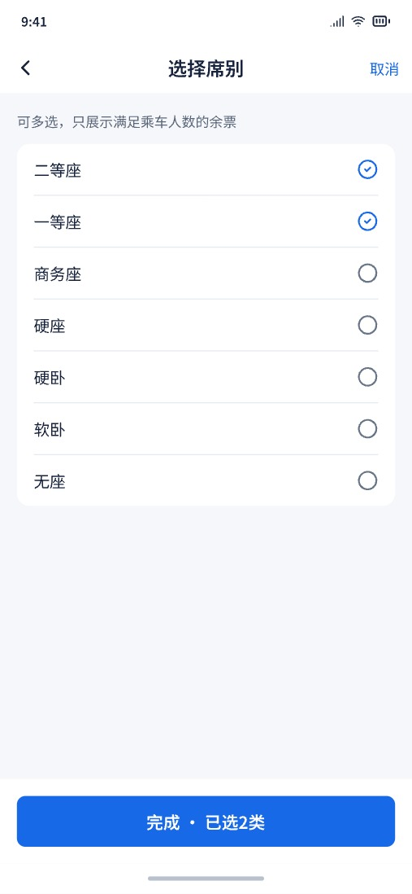
13 320dp · 车次列表适配
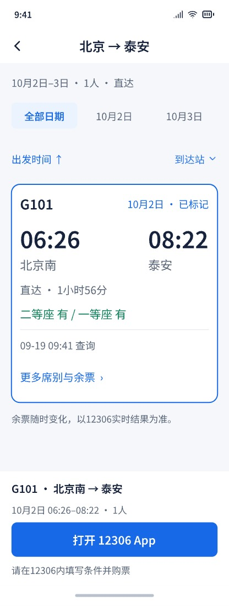
14 关键状态与交互规则
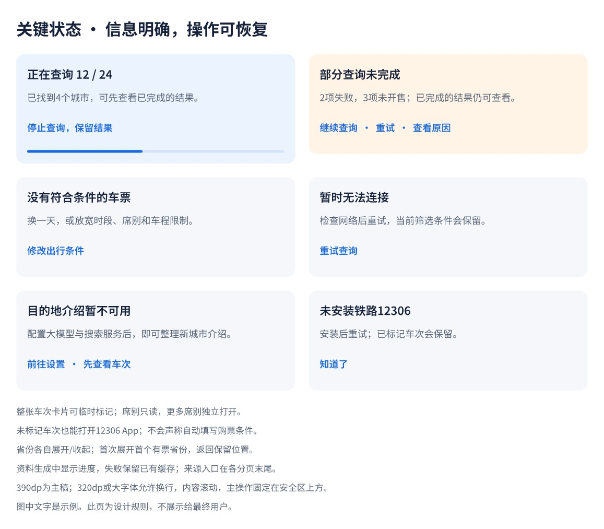
15 车次列表 · 未标记也可打开12306
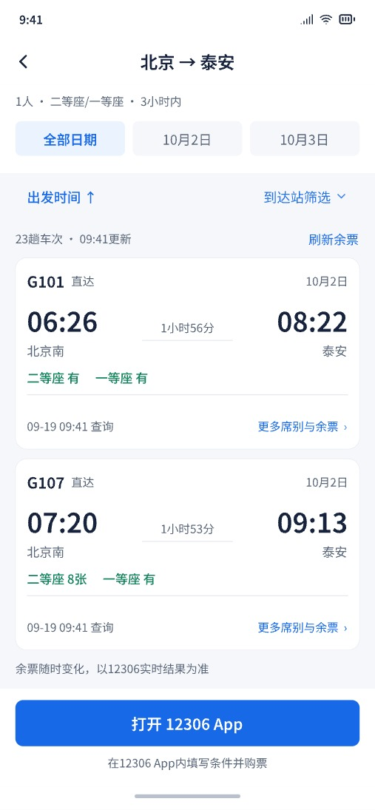
16 组件与间距规范
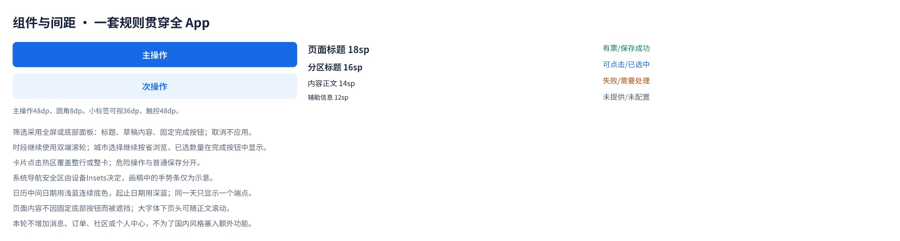